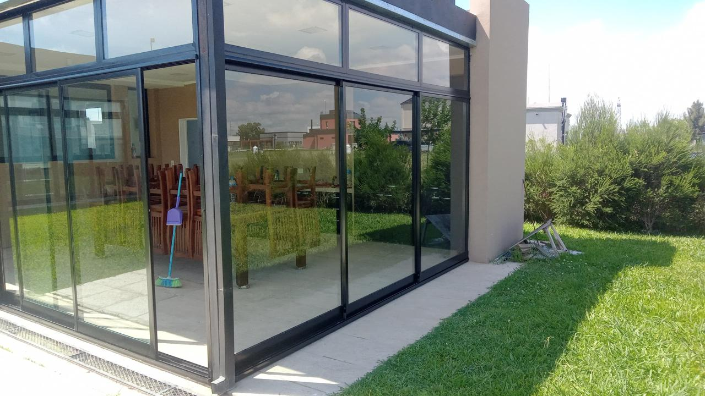
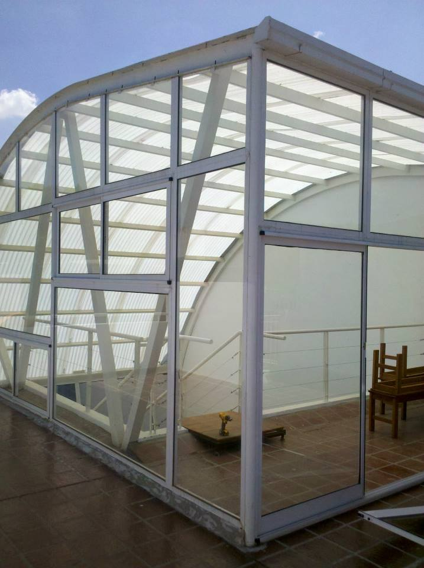
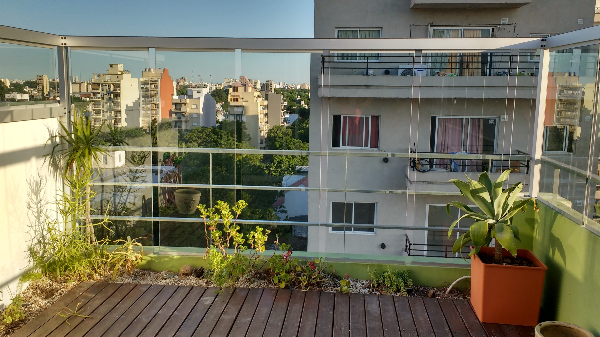

Aberturas de aluminio
Fabricación y colocación a medida con perfilería de primera calidad, distintas tipologías y opciones de renovación.

Fabricación e instalación de cerramientos y aberturas a medida para todo tipo de proyectos.
Qué hacemos
Diseñamos, fabricamos e instalamos aberturas, cerramientos y techos a medida, combinando resistencia, funcionalidad y una estética cuidada para cada espacio.
Fabricación y colocación a medida con perfilería de primera calidad, distintas tipologías y opciones de renovación.
Galerías, quinchos y nuevos ambientes con estructuras de aluminio, vidrio y distintas alternativas de cubierta.
Techos fijos o corredizos en aluminio, hierro, madera, chapa, policarbonato, poliacrílico o vidrio laminado.
Fabricación e instalación de rejas a medida, fijas, de abrir o corredizas, según la necesidad de cada proyecto.
Soluciones complementarias para nuevos espacios, incluyendo decks, pisos, pintura e instalación de luminarias.
OBRAS



Proceso
Analizamos el espacio, tomamos medidas y evaluamos las mejores alternativas según el uso, orientación y estructura existente.
Definimos perfilería, tipologías, vidrios (DVH, simples, laminados etc.) y opciones de colocación, adaptándonos a cada proyecto y necesidad del cliente.
Fabricamos cada abertura con Aluminio y accesorios de primera calidad, garantizando precisión, terminación y durabilidad.
Realizamos la colocación en obra o renovación con sistema en seco, logrando una instalación limpia, segura y sin intervenciones innecesarias.
Acompañamos al cliente una vez finalizado el trabajo, brindando soporte y garantizando la calidad y durabilidad de cada instalación.
Te acompañamos en cada etapa del proyecto.
Preguntas frecuentes
Sí. Fabricamos e instalamos aberturas, cerramientos y techos a medida, según las necesidades de cada proyecto.
Realizamos aberturas de aluminio, cerramientos, techos, rejas de seguridad y reformas integrales vinculadas a la generación de nuevos espacios.
Sí. Ofrecemos opciones con doble vidriado hermético (DVH), que mejoran la aislación térmica y acústica.
Sí. Contamos con sistema de colocación en seco para renovación de aberturas, evitando obras húmedas y roturas innecesarias.
Trabajamos principalmente en CABA y GBA.
Sí. Analizamos cada espacio, tomamos medidas y asesoramos según el tipo de proyecto y las necesidades del cliente.
Sí. Acompañamos al cliente también en la etapa posterior a la instalación y garantizamos la calidad de nuestros trabajos.
Podés escribirnos por WhatsApp, enviarnos fotos, medidas, planos o una idea general del proyecto y te asesoramos.
Contacto
Mandanos planos, fotos o una idea general de lo que necesitás. Te asesoramos para encontrar la mejor solución para tu espacio.